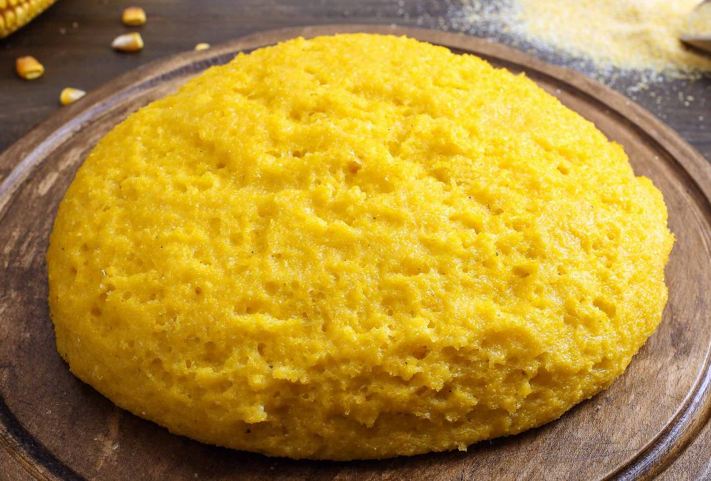

Mamaliga Recipe

This easy mamaliga recipe provides a quick and simple way to prepare the traditional Romanian cornmeal porridge. Here's a description of the process:
Ingredients:
- 1 cup cornmeal
- 4 cups water
- 1 teaspoon salt
- 2 tablespoons butter (optional)
Steps
- Bring 4 cups of water to a boil in a pot.
- Once the water is boiling, add 1 teaspoon of salt and stir to dissolve.
- Gradually sprinkle the cornmeal into the boiling water, stirring constantly to avoid lumps.
- Continue stirring over medium heat until the mixture thickens to a porridge-like consistency. This usually takes about 5-7 minutes.
- If desired, stir in 2 tablespoons of butter for added richness. This step is optional but adds a delicious flavor.
- Once the mamaliga reaches the desired thickness, remove it from the heat.
- If you want to mold the mamaliga, transfer it to a bowl or mold while it's still hot. Smooth the top with a spatula.